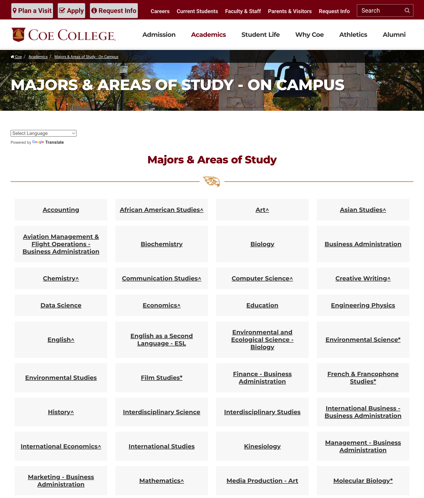

A comprehensive audit of coe.edu/academics/majors-areas-study covering accessibility, SEO, content, UX, privacy, performance, and competitive positioning against peer institutions.

Aggregated across all audit dimensions. A score below 40 indicates fundamental gaps requiring immediate attention. Peer institutions score 55–75 on the same rubric.
The page fulfills its most basic function (listing program names with links) but fails to meet modern standards in every other dimension.
Coe's Majors page is the primary gateway for prospective students. Despite 82 program listings, it provides almost zero information about any of them.
82 programs in one flat list. No keyword search, no category filters, no department grouping. Students who don't know what they want have zero way to explore.
Every major is a name and a link. Not one sentence about what students will study, what careers it leads to, or why Coe's program stands out.
Zero alt text. No ARIA labels. Inaccessible symbols. Missing semantic HTML. Fails WCAG 2.1 Level A — the bare minimum — with potential ADA legal exposure.
No meta description, OG tags, Twitter Cards, Schema.org, or canonical URL. Social previews are blank. Google gets zero structured information.
5 tracking scripts fire before consent. Hotjar records session replays. No cookie banner. Likely violates GDPR, CCPA, and emerging state privacy laws.
No rankings, accreditation badges, graduation rates, employment data, class sizes, or student-faculty ratio. Zero proof of value from a quality institution.
These aren't nice-to-haves. They represent industry standards that Coe is currently missing.
Each scored on a 100-point scale. Red means failing. Yellow means far below standard.
Captured March 30, 2026. A text-heavy link list with no visual hierarchy, no descriptions, and no interactive elements.
The page is an extremely long vertical scroll of plain-text links. Download full-page screenshot →
On-campus areas of study. 19 also offered as minors.
Standalone minors plus 19 majors that double as minors.
Preparatory tracks for graduate & professional schools.
Differentiated only by tiny * symbols with the legend buried at the bottom.
Fixing these gaps isn't about compliance alone — it's about enrollment, trust, and competitive positioning.
Meta descriptions, Schema.org, OG tags, and canonical URLs could lift organic CTR 20-40% and unlock Google rich snippets.
Search/filter and brief descriptions transform a link directory into an exploration tool. Students engage longer and convert at higher rates.
Graduation rates, employment stats, accreditation badges, and rankings directly address families' #1 concern: "Is this worth the investment?"
WCAG fixes and cookie consent eliminate ADA lawsuit risk and privacy regulation exposure. Higher-ed is increasingly targeted in a11y litigation.
An interactive "What should I study?" tool becomes a lead gen engine. Peers are adopting fast — early movers capture undecided students.
Removing legacy UA and adding async attributes improves load time with zero risk. GA4 upgrade restores lost data collection.
WCAG 2.2 / ADA compliance
Search visibility & social sharing
Schema.org markup tells Google what your page is about in machine-readable format. Coe's majors page has zero structured data. Here's what's missing and exactly what should be added.
The page source contains no <script type="application/ld+json"> blocks, no microdata attributes, and no RDFa markup. Google receives no machine-readable information about this page.
Google doesn't know this is a college, where it's located, its accreditation status, or how to display it in knowledge panels.
None of the 82 programs are marked up. Google can't show program names, types, or provider info in rich results.
The list of majors isn't identified as a structured list. Can't appear as a carousel or list snippet in search results.
Breadcrumbs exist visually (Coe > Academics > Majors) but aren't in markup. Google shows raw URLs instead of clean paths.
The page needs 3 JSON-LD blocks injected into the <head>. Each uses the @id pattern so Google links them as a connected graph.
Institution identity with name, address, geo coordinates, phone, email, founding date, social profiles, logo, and accreditation credentials. Uses @id so programs can reference it.
Wraps all 82 programs as EducationalOccupationalProgram entries inside an ItemList. Each program has name, URL, type (Major/Minor/Pre-Professional), and provider reference.
Three-level navigation: Coe College → Academics → Majors & Areas of Study. Enables clean breadcrumb display in Google search results.
Not Schema.org but equally critical: og:title, og:description, og:image, twitter:card. These control how links appear when shared on social media.
This block establishes Coe College as a recognized entity in Google's Knowledge Graph. Copy-paste ready.
Each program is typed as EducationalOccupationalProgram and references the institution via @id. Showing 3 of 82.
Breadcrumbs exist visually on the page but aren't in structured markup, so Google shows raw URLs in search results instead of clean navigation paths.
Programs can appear as expandable lists, knowledge panels, or carousel results. Competitors with structured data get visually richer, higher-CTR listings.
"What majors does Coe College offer?" — without Schema, voice assistants can't answer. With it, your programs are in the answer graph.
Google's AI Overviews pull from structured data to generate summary answers. Without Schema, Coe is invisible in these new result types.
Many comparable liberal arts colleges already have Schema.org markup. Every day without it, Coe loses search visibility to institutions that do.
These are 3 static JSON-LD blocks in the page's <head>. No CMS plugin required. A developer can implement all three in under 2 hours. The program list can be generated dynamically from the existing CMS data. Zero risk — structured data is invisible to users, only read by search engines.
What prospective students can't find
Navigation, layout & interaction
Tools peer institutions already offer
Credibility for students & parents
GDPR, CCPA, cookie consent
Speed, code quality & tech debt
Duplicates, ambiguity & URL mismatches
Feature-by-feature comparison with comparable liberal arts colleges.
| Feature | Coe | Peers |
|---|---|---|
| Program search & filter | ✗ | ✓ Most |
| Program descriptions | ✗ | ✓ All |
| Student outcome data | ✗ | ✓ Many |
| Interactive major quiz | ✗ | ✓ Many |
| Video content per program | ✗ | ✓ Many |
| Faculty highlights | ✗ | ✓ Most |
| Schema.org structured data | ✗ | ✓ Many |
| Open Graph social tags | ✗ | ✓ Most |
| Cookie consent mechanism | ✗ | ✓ Most |
| Mobile-first card design | ✗ | ✓ Most |
| Chatbot / virtual assistant | ✗ | ✓ Growing |
| Cost / ROI information | ✗ | ✓ Some |
| Accreditation badges | ✗ | ✓ Most |
| Rankings displayed | ✗ | ✓ Most |
| Degree pathway visualizer | ✗ | ✓ Some |
| Accessibility statement | ✗ | ✓ Most |
| GA4 (current analytics) | ✗ | ✓ All |
These are table-stakes features. The gap widens every enrollment cycle.
Addressing the top 5 alone would dramatically transform this page's effectiveness.
We built a full redesign mockup that addresses the top priorities above — search, filtering, program cards, trust signals, and modern UX patterns.